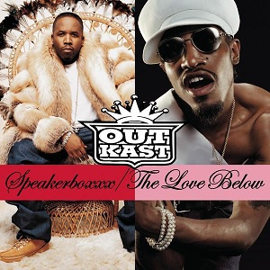
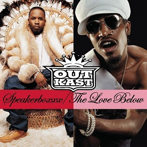

Speakerboxx/The Love Below
Released December 2013
Musicians:
- André Lauren Benjamin
- Antwan André Patton
The recording of The Love Below began at André 3000's Los Angeles home, using Pro Tools software, in addition to a drum machine, keyboards and various synthesizers. He enjoyed the atmosphere of recording at home instead of a studio, saying to XXL, "it didn't start in the studio because if you have a bunch of people around, they're coming from the party and I'm in there singing falsetto ... those vibes didn't match."
 

Side One
- Intro
- GhettoMusick
- Unhappy
- Bowtie
- The Way You Move
- The Rooster
- Bust
Side Two
- War
- Church
- Bamboo
- Tomb of the Boom
- E-Mac
- Knowing
- Speakerboxxx/The Love Below received widespread acclaim from music critics, who praised the consistency of Big Boi's Speakerboxxx.
- The CD artwork is designed so that the Speakerboxxx artwork is on the front of the case, whereas the Love Below artwork is on the back.
- Producer Outkast
- Speakerboxxx/The Love Below is a two-disc set that features 39 tracks.